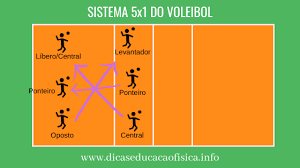

Rotaçao 5 1 no Volei
CARACTERÍSTICAS DO SISTEMA 5×1 DO VOLEIBOL
Todos os jogadores são especialistas em determinada função;
Há 1 Levantador (especialista em Levantamento);
1 Oposto (especialista em ataque);
2 Ponteiros (especialistas em Passe e Ataque)
2 Centrais (especialistas em Ataque de meio e Bloqueio)
Usados por equipes muito bem treinadas e profissionais;
Não adequado para equipes iniciantes;
Utiliza o Líbero (especialista em Passe e Defesa)
.png)
O posicionamento dos jogadores no Sistema 5×1 sempre segue a lógica da Diagonal.
O Levantador sempre na diagonal do Oposto;
O Central sempre na diagonal do outro Central ou Líbero;
O Ponteiro sempre na diagonal do outro Ponteiro.

MOVIMENTAÇÕES:
Oposto ficou isolado atrás do Ponteiro que está no fundo da quadra;
O Ponteiro que estava no centro da rede (posição 3), recuou para fazer o passe junto com o outro Ponteiro e o Líbero;
O Levantador se movimentou para o lado direito da rede (posição 2) para realizar o levantamento;
O Central se movimentou para o centro da rede para para
Veja mais para mais informações